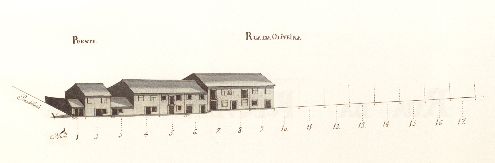

Rua da Oliveira - Vista nascente.

Rua da Oliveira - Vista poente.

Rua Da Oliveira - Vista 1

Rua Da Oliveira - Vista 2
Rua da Oliveira - Vista nascente.
Rua da Oliveira - Vista poente.
Rua Da Oliveira - Vista 1
Rua Da Oliveira - Vista 2
Pertencente ao complexo urbanístico do campo Novo , ligava esta praça ao local actualmente chamado largo das Teresinhas . Uma pequena artéria, denominada Cangosta para a rua de Santa Margarida , permitia a passagem para a igreja de S. Vicente e capela de Guadalupe .
Aberta também em 1725 era, nesta data, uma rua cujos edifícios estavam em construção. No Mapa há 22 casas já levantadas e 13 «chãos» para edificarem.
Os prédios que vemos são de um piso (59%) ou dois, bastante semples, sendo a maior parte (59%) do tipo com porta ladeada de janela no piso térreo. A linha de empenas é irregular, quebrada e as janelas ou são vazadas, ou são do tipo bracarense. Também aqui não há o rigor da marcação de janelas altas e portas, da praça do Gavião ; são antes casas avulsas que tiveram o desenho de fachada desejado pelo morador, sem preocupações de conjunto ou de integração. Não deixa de ser curioso notar, contudo, a sequência vertical de porta e janela alta nas casas dos prazos 5 e 7, ou até a janela alta do prazo n.º 8, a lembrar aquela praça.
As 14 do lado Nascente e 8 do Poente são todas prazos do Cabido.
Mantém a designação de rua das Oliveiras .
Custódio Dias, vendeiro, casado com Francisca Teresa, paga 1000 reis ao enfiteuta do prazo do casal dos Chãos ou Quinteiro, conforme o subemprazamento de 1739 .
Confronta, do sul, com o chão n.° 16 da Praça do Gavião .
Marcos Lopes, branqueador, casado com Luísa Mendes, paga 1200 reis ao enfiteuta do prazo do casal dos Chãos ou Quinteiro, conforme o subemprazamento de 1725 .
Diogo Fernandes, branqueador, casado com Maria de Almeida, paga 1200 reis ao enfiteuta do prazo do casal dos Chãos ou Quinteiro, conforme a subemprazamento de 1725 .
João da Costa, viúvo, alfaiate, paga 1200 reis ao enfiteuta do prazo do casal dos Chãos ou Quinteiro, conforme o subemprazamento de 1726 .
João Dias, abridor de guarnição de espada, casado com Mariana Carvalho, paga 1200 reis ao enfiteuta do prazo do casal dos Chãos ou Quinteiro, conforme o subemprazamento de 1725 .
Manuel de Barros, alfaiate, casado com Maria da Ascensão, paga 1200 reis ao enfiteuta do prazo do casal dos Chãos ou Quinteiro, conforme o subemprazamento de 1738 .
Bento de Magalhães, casado com Mariana Ribeiro, paga 2760 reis ao enfiteuta do prazo do casal dos Chãos ou Quinteiro.
Encontram-se unidas desde o ano de 1738 .
Paga foro ao enfiteuta do prazo do casal dos Chãos ou Quinteiro.
Chãos de casa do prazo do casal dos Chãos ou Quinteiro. O n.° 17 confronta, do norte, com o «chão» da futura travessa para a Rua de S. Barnabé .
Chãos de casa do prazo do casal dos Chãos ou Quinteiro.
O chão n.º 18 confronta, do norte, com o caminho que vai para S. Vicente .
Pertencem ao casal dos Chãos ou Quinteiro, a cujo enfiteuta se paga foro. Nos livros dos prazos do cabidonão se encontram escrituras de subemprazamento.
Brites de Barros, viúva de Tomé de Magalhães, paga 1200 reis ao enfiteuta do prazo do casal dos Chãos ou Quinteiro, conforme o subemprazamento de 1737 .
Caetano Gonçalves, serralheiro, casado, paga 1440 reis ao enfiteuta do prazo do casal dos Chãos ou Quinteiro, conforme o subemprazamento de 1738 .
Esteve unida, entre os anos de 1729 e 1738 , à casa n.° 31.
Custódio Ferreira, casado com Joana Fernandes, paga 1200 reis ao enfiteuta do prazo do casal dos Chãos ou Quinteiro, conforme o subemprazamento de 1745 .
José Gomes de Andrade, pentieiro, paga 1200 reis ao enfiteuta do prazo do casal dos Chãos ou Quinteiro, conforme o subemprazamento de 1729 .
António Gomes, cardador, casado com Rosa da Silva, paga (por cada uma destas casas), 1200 reis ao enfiteuta do prazo do casal dos Chãos ou Quinteiro, conforme os subemprazamentos feitos em 1728 e 1725 .
João Fernandes, sombreireiro, casado com Amónia Francisca, paga 1200 reis ao enfiteuta do prazo do casal dos Chãos ou Quinteiro, conforme o subemprazamento de 1725 .
Pedro Gomes, casado com Luísa Maria, paga 2000 reis ao enfiteuta do prazo do casal dos Chãos ou Quinteiro, conforme o subemprazamento de 1745 .
Confronta, do sul, com a casa n.° 17 da Praça do Gavião .
| Número de porta | Enfiteuta |
|---|---|
| 1 | D. Agostinho Maria de Barros Gavião, enfiteuta principal do prazo do casal dos Chãos ou Quinteiro. |
| 2 | D. Agostinho Maria de Barros Gavião, enfiteuta principal do prazo do casal dos Chãos ou Quinteiro. |
| 3 | D. Agostinho Maria de Barros Gavião, enfiteuta principal do prazo do casal dos Chãos ou Quinteiro. |
| 4 | D. Agostinho Maria de Barros Gavião, enfiteuta principal do prazo do casal dos Chãos ou Quinteiro. |
| 5 | D. Agostinho Maria de Barros Gavião, enfiteuta principal do prazo do casal dos Chãos ou Quinteiro. |
| 6 | D. Agostinho Maria de Barros Gavião, enfiteuta principal do prazo do casal dos Chãos ou Quinteiro. |
| 7 e 8 | D. Agostinho Maria de Barros Gavião, enfiteuta principal do prazo do casal dos Chãos ou Quinteiro. |
| 9 | D. Agostinho Maria de Barros Gavião, enfiteuta principal do prazo do casal dos Chãos ou Quinteiro. |
| 10 a 17 | D. Agostinho Maria de Barros Gavião, enfiteuta principal do prazo do casal dos Chãos ou Quinteiro. |
| 18 a 22 | D. Agostinho Maria de Barros Gavião, enfiteuta principal do prazo do casal dos Chãos ou Quinteiro. |
| 23 a 28 | D. Agostinho Maria de Barros Gavião, enfiteuta principal do prazo do casal dos Chãos ou Quinteiro. |
| 29 | D. Agostinho Maria de Barros Gavião, enfiteuta principal do prazo do casal dos Chãos ou Quinteiro. |
| 30 | D. Agostinho Maria de Barros Gavião, enfiteuta principal do prazo do casal dos Chãos ou Quinteiro. |
| 31 | D. Agostinho Maria de Barros Gavião, enfiteuta principal do prazo do casal dos Chãos ou Quinteiro. |
| 32 | D. Agostinho Maria de Barros Gavião, enfiteuta principal do prazo do casal dos Chãos ou Quinteiro. |
| 33 e 34 | D. Agostinho Maria de Barros Gavião, enfiteuta principal do prazo do casal dos Chãos ou Quinteiro. |
| 35 | D. Agostinho Maria de Barros Gavião, enfiteuta principal do prazo do casal dos Chãos ou Quinteiro. |
| 36 | D. Agostinho Maria de Barros Gavião, enfiteuta principal do prazo do casal dos Chãos ou Quinteiro. |